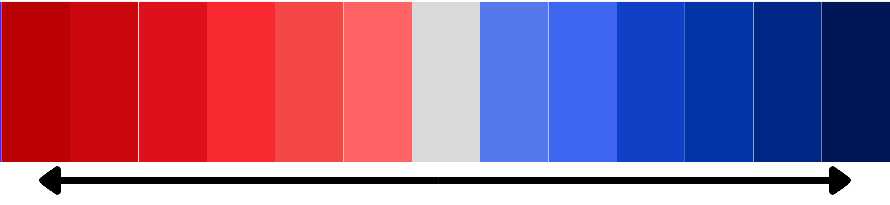

PoliWatch
Fullerton, CA 92831
45th Disctrict
Senators:
Adam Schiff
Alex Padilla
House of Representative:
Derek Tran
Continue to PoliWatch Hub
Clear
Political Bias Meter:

This article leans
center-left
based on keyword analysis.